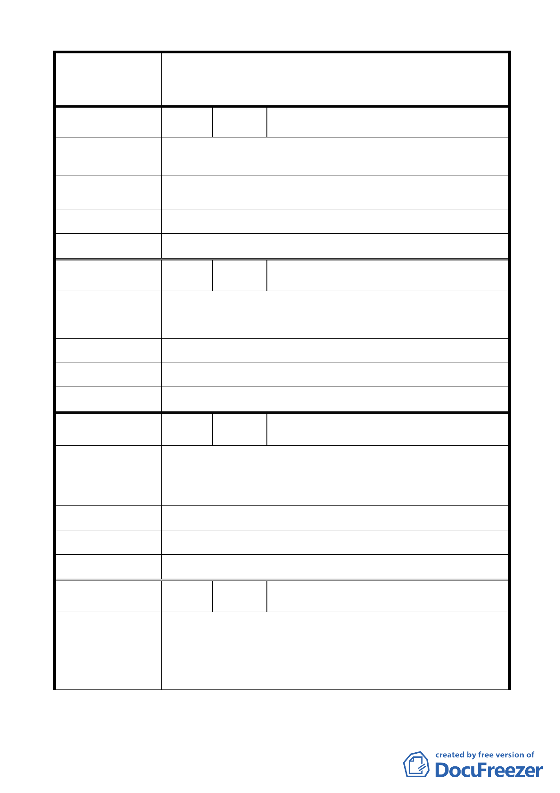

變更臺北市中山區北安段三小段 297-1 地號等20 筆高職
案 名 用地為機關用地（供國防部國防專區使用）及抽水站用地主
要計畫案
編 號 20 陳情人 徐聿伶
說明會內容完全沒提到對土地上的現住戶的安排，使我們現
陳 情 理 由 有住戶人心不安。
建 議 辦 法 先安置再拆遷。讓現住戶能有安心的地方和日子可以過。
市 府 回 覆 意 見 同編號 5（三）市府回應說明。
大 會 決 議 同編號 5 決議。
編 號 21 陳情人 劉家豪
大直地區淹水主因非抽水站之不足，而是人謀不臧、疏浚無
陳 情 理 由 方，用不著浪費財力建抽水站。
建 議 辦 法 抽水站興建改有急需淹水地區興建。
市 府 回 覆 意 見 同編號 5（二）市府回應說明。
大 會 決 議 同編號 5 決議。
編 號 22 陳情人 劉校綱
明水路在樂群二路口以北那一小段的地勢比較高，以南一直
陳 情 理 由 到大直橋那段及樂群二路地勢較低。
在地勢低的地方增設本身也難逃被淹水，根本起不了作用。
建 議 辦 法 如果要增設地點可以找地勢較高的地方。
市 府 回 覆 意 見 同編號 5（二）市府回應說明。
大 會 決 議 同編號 5 決議。
編 號 23 陳情人 劉校君
台北市政府納莉風災過後重建委員會的檢討-加高堤防和增
陳 情 理 由 設抽水站並沒有找到「治本」的辦法。
- 16 -